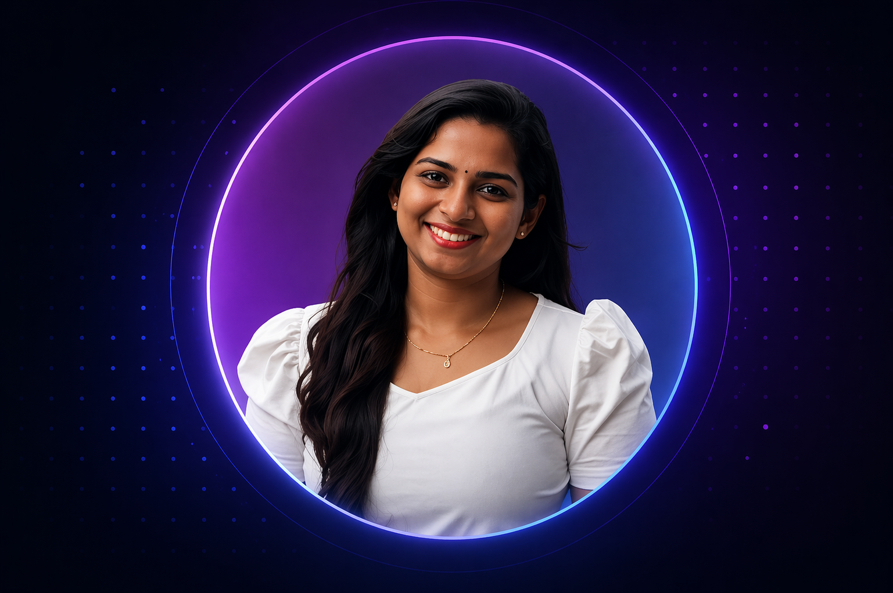

Cloud Native
Building scalable solutions on AWS with best practices.
Hi, I’m
I build secure, scalable and reliable cloud solutions on AWS. Passionate about automation, infrastructure as code and continuous learning.

Cloud Specialist
Hands-on Labs
Every Day
I’m an IT infrastructure support professional transitioning into cloud and DevOps. I have experience in incident management, monitoring, Active Directory and Microsoft 365, and I’m building AWS projects to strengthen my cloud engineering skills.
Building scalable solutions on AWS with best practices.
Learning automation workflows and CI/CD pipelines.
Focused on IAM, access control and compliance.
Exploring new technologies and improving daily.
S3, CloudFront, IAM, Lambda, API Gateway, DynamoDB
GitHub Actions, CI/CD, automation, deployment workflows
Infrastructure as Code, remote state, modules, backend setup
CloudWatch alarms, logs, metrics and incident visibility
IAM, access control, least privilege and policy analysis
Active Directory, Microsoft 365, Windows Server
Incident handling, troubleshooting, escalation and RCA
Docker basics, containerized apps and deployment concepts
A fully serverless personal portfolio deployed on AWS, showcasing best practices in cloud architecture. It leverages S3 for static hosting, CloudFront for global content delivery, Terraform for infrastructure as code, and a CI/CD pipeline for automated deployments, with monitoring handled via CloudWatch.
A security-focused AWS project designed to analyze IAM policies and identify overly permissive access. The tool helps improve cloud security posture by detecting risks, enforcing least privilege principles, and providing insights into access control configurations.
An AI-driven application that recommends music playlists based on user mood. It uses sentiment analysis to interpret user input and integrates backend APIs to dynamically generate personalized recommendations through a FastAPI-powered service.
A responsive web application that integrates external APIs to search and display open-licensed media. It focuses on delivering a smooth user experience with dynamic content rendering and efficient API handling using modern JavaScript.
UST
Master of Science (MSc), Cloud Computing
Bachelor of Technology (BTech), Electronics and Communication Engineering
I’m open to cloud support, infrastructure support, junior cloud and DevOps opportunities.